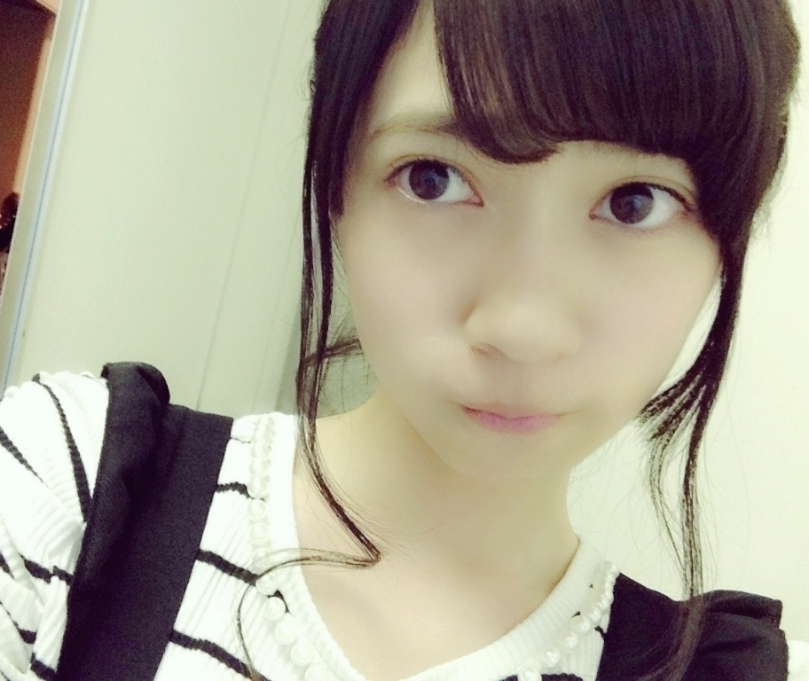
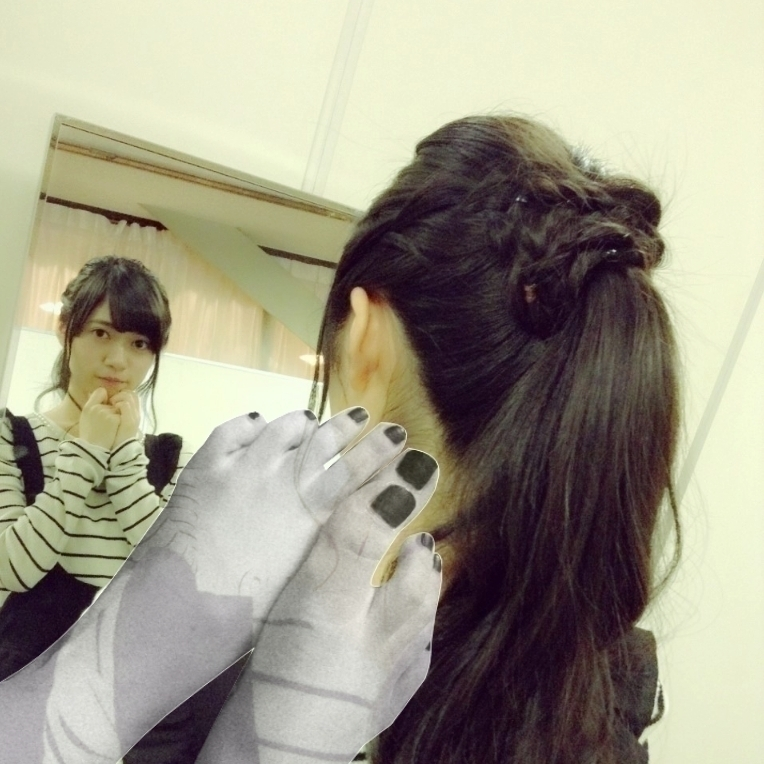
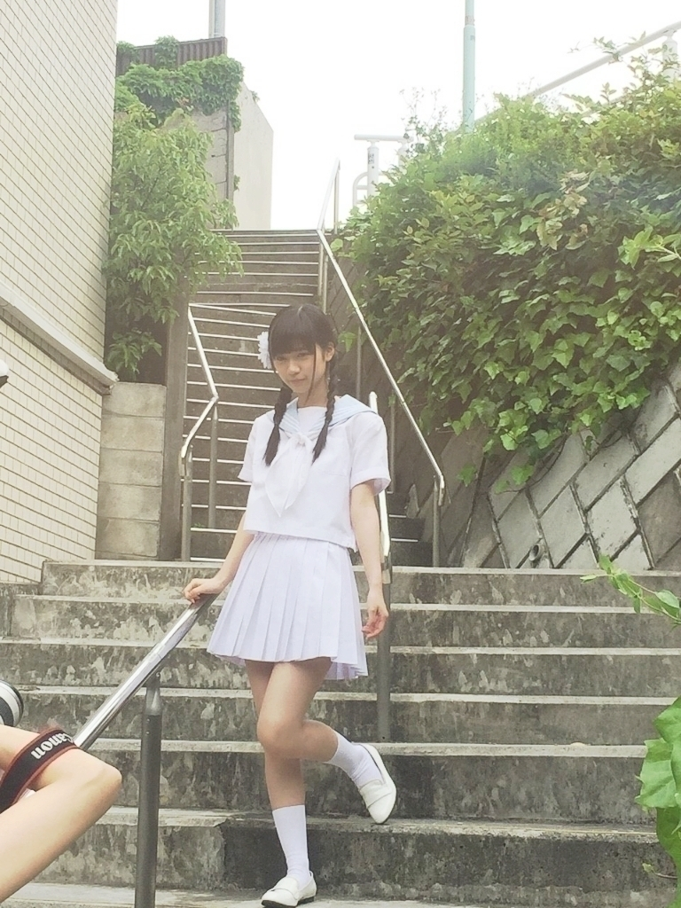
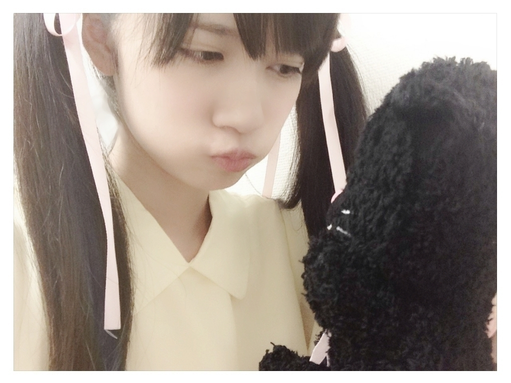

2015/0615Mon愛着の時代にだって。×✖×
1:11
4:44
2:22
最近、ふっと時計を見ると
ゾロ目さんが多い
今日この頃、、、
何かあるのでしょうか
今朝も
朝6時に目覚ましを
かけといたのですが
5時59分に目が覚めて
なんか、怖いなって
そんな朝でした。
ゾロ目をみるのって
良くないのですか( ; o ; )？！
ちなみに、最近無くし物が
増えました
買ったばかりのリップ
しかもそのリップ
なかなか売ってなくって
薬局屋さんとか4軒目にして
ようやく買えたというリップ
つける人によって
色が変わるという
珍しいリップで人気で、、、
そして、前髪を止めるピン
何個かなくしました。
まぁ、これは何個かまだあるので
まだいいのですが( ..)``
変な所に
口内炎ができました
私も人間でした。
きっと、いい事も
ある( ..)``
個別握手会○名古屋

ありがとうございました
撮影:伊藤純奈
この足はお洋服に合わせて
ネイルしてきましたの図です

お洋服は
こちらです♬
全て
LIZ LISA様でしたよ
パンツスタイルが非常に
珍しかったのではないでしょうか
そして、髪型もゆるっと
後ろから見たら
凄くこってあるヘアースタイル♬
メイクさんにお任せで
やって頂きました
メイクさん
ありがとうございます( ..)``
コメントお返事○
○かわいい！！
400円で買えるとかめっちゃ安い♩
それをかわいく
着こなしてる
らんぜちゃんもすごい♡
古着好きなの？？
→ありがとう♬
古着親が好きで
その影響で昔から古着は
よく買います
○蘭世
ブログ更新ありがとう(o^^o)
最近雑誌に載ることが
増えてきたね(o^^o)
いろいろ
チェックさせてもらってるけど
本当可愛いのばっかりで
嬉しいな♡
握手会も1部
増えて嬉しいかぎり٩(๑❛ ❛๑)۶
とりあえず応募はしたので
あとは当たるのを待つばかり...
蘭世の勢いとまらんぜすぎ（笑）
ボブ蘭世も可愛い♡
地方行かないから次の握手は
9月になっちゃうけど
応援してるよ(o^^o)
ソログラビア
まだ一冊のみしか買って
なくてごめんなさいm(_ _)m
→コメントありがとうございます
今年の目標の1つである
雑誌に沢山出ることが
少しずつ叶っていることが
大変嬉しいです♬
きっと、今年の年末頃に
今年はこんなにいろんな雑誌に
出させていただけたんだねーって
ママと話したい♬
これも親孝行だ
がんばります( ..)``
雑誌買って下さって
ありがとうございます
○らんぜ！
はじめてコメントする！
今年大学受験で
握手会とかLIVEとか行けないけど
終わったら絶対会いに行くから
待っててねー✌ ✌
→はじめまして
寺田蘭世です
宜しくお願い致します！
お受験頑張って下さい
ぜひ、いいお知らせを
お待ちしてますね( ..)``
○5/2？の全握で
はじめて握手してから
推してます！
二期生の中で
一番好き！←乃木坂の中じゃなくて
申し訳ないです...
ショートのらんぜも
かわいいと思うので
また写真見せてください！
らんぜの勢いとまらんぜー！
応援してます！
→全国握手会！
ありがとうございました
全国握手会では
はじめてたくさんの方と
直接お会いできて
凄く楽しかったです♬
ショートヘアー可愛いって
言ってくださる方
珍しい
これまた嬉しいです♬♬
○９月１３日個握、
完売おめでとう！
残念ながら僕が応募する前に
完売しちゃったんで
行けないんです泣
９月１３日も
追加してくれればいいのに
お願い、運営様......
まあ行けなくても
応援してるから！
来週から修学旅行で
北海道行ってくるよ
楽しんできまーす
では
蘭世の勢い止まらんぜ！！！
→コメントありがとうございます
完売
本当に有りがたいです
皆様
でも、もっと沢山の人に
会える予定が
もう、チケットがなくって
会えないのかな、、、( ; o ; )
悲しい悲しい
修学旅行楽しんでくださいね
お見上げ待ってますよ♬
嘘ですよ嘘
冗談です
楽しんでくださいね
とまらんぜ( ..)``
○らんぜー(*´罒`*)初コメだよ！
新制服かわいいね！(º﹃º )ﾀﾞﾗｰｰｰｰ
今度、学校の研修で
月組の
｢1789バスティーユの恋人たち｣
を見てくるよ！
宝塚を見るのは
初めてだけど演劇も歴史も
大好きだから
凄い楽しみなんだ！
今度感想書きにくるね！(*´∀｀)
おーが
→コメントありがとうございます♬
なんと羨ましい
学校の研修かぁー
宝塚から沢山学んでください
そして、楽しんでくださいね
そして、朝美絢様を
よかったら
チェックよろしくです。笑
また、感想お聞かせください
○質問の返信お疲れ様です！(^^)
丁寧&謙虚なとこがいつも素敵で、
頭が上がらんぜです(*´∀｀)笑
返信もらえた人は嬉しくて、
涙が止まらんぜ！ですね☆笑
→お疲れ様です♬
質問返し楽しいんですよ
最近はまってて
ブログを更新するたびに
コメント返させてもらってます
頭上げてくださいね。笑笑
とまらんぜ
これからも
宜しくお願い致します( ..)``
○最近、昼ごはん食べるとき
割り箸から
MY箸を使うように
したんだけどこれも
エコかな？笑
握手会の写真見ると、
フード被ってた
可愛すぎる蘭世を思い出すな～
最高だった
新制服もばっちり似合ってるね
→エコですね♬
ナイスエコでございます
これからも
エコしましょうね
よろしくです( ..)``
○あ、質問です。
プライベートでは
カジュアルな服装は
少ないんでしょうか？
差し支えなければ
教えてください(笑)
→コメント
ありがとうございます
お洋服は
本当に色んなジャンル？！なものが好きで定まりがないです
ただ、可愛いって思ったもの
その日の気分によって
フリフリぽい
ピンクピンクな物が着たいなーとか
今日は楽着で行こうとか
定まりがないのが
悩みでもありますが
それが寺田蘭世のスタイルです♬
○初コメントです！
乃木坂46と宝塚が大好きです！
先日、神席で
観てきましたよ！
私は昔から花組が大好きで
今は明日海りおさん推しです！
好きな演目は
断然エリザベートです！
エリザベートだけで
数種類DVDあります笑
らんぜちゃんは誰、
何が好きなんですか？
→神席羨ましい限り
私の最大限の神席は
凰稀かなめ様のラスト公演のときで
前から確か、、、
13とか12列目とかでした
でも、ステージ横の
ちょっとした花道の近くで
かなめ様がこちらにくると
凄く近くでみれました♬
明日海様
可愛いし、かっこいいですし
もう完璧ですよね
あの明日海様の
舞台初日や千秋楽での
ご挨拶ぷりはたまらなく
萌えます、、、笑
私の一番ご贔屓は
朝美絢様です
宜しくお願い致します！！
マグリット展○
お仕事帰りに
1人マグリット展へ行きました
ようやく行けました♬
本当はみり愛たんとも
行く約束をしていたのですが
お先に失礼しました( ..)``
なんか、奥が深くて
これをどう捉えるのか
どう見えたの
1人1人違うだろうなーって
深く考えたくもなりましたが
この捉え方が
私であって
私だけなんだろうって
だからこそ価値があるのかなっと
寺田蘭世は思いました♬
人それぞれですから
同じ人が居ないからこそ
面白みがある
自分の好きな作品が
1つあって
その作品のポストカード等を
お買い上げしました♬
大切にします
そして、展示されている
作品が全て載っている
分厚い本もお買い上げしました
今回はじめて知った作品の中で
新たにお気に入りになった
作品は
「絶対の声」
です
他にも何枚かお気に入りが
増えたんですが
この作品がすごく可愛いなって
「困難な航海」
っという作品では
なんか引き込まれ過ぎて
何分居たんだろう、、、
10分くらい
居たのではっというくらい
見とれちゃいました♬
その日の夜は
この本を見ながら
眠りにつきました( ..)``
前回のブログで書こうと
思っていたのですが
UTB＋さん
見て頂けたでしょうか？
乃木坂連載のページです
人生初ソロでした
テーマは
2次元な寺田が3次元な
世界へっという事だったそうで
町中の色々なところで撮りました
オフショットを
どうぞです

UTB＋さん
モバメでも色々
メールしちゃいましたが♬
絶対永久保存版で
テラダの事
応援して下さってる方にとっては
記念日ですね( ..)``( ..)``
モアイ像に体が発見されたとの事で
モアイ像可愛いなーって
小学校3年生くらいのときは
モアイ像の置物だったり
集めていました
懐かしい。
体があったなんて
素敵です♬
乃木中○
いかがでしたか
掘り下げ企画は、、、？
ボーダー組ではラストでした
琴子の10くらいの質問？でしたっけから始まり
5くらいの質問や
掘り下げ企画
これから、かりん達も
掘り下げてもらえるらしいので
( ..)``
ちなみに、フラフープ以外には
輪ゴム芸
宝塚
の予定だったそうで
輪ゴム芸の方はスタジオでも
やらせて頂きました
宝塚はやらなかったのですが
もしあったら
一番好きなエリザベートの
ワンシーンとか
特に好きな振り付けとか
っと考えておりました♬
あの、瞬間で寺田蘭世を
はじめてみたよーって方も
いらっしゃったと思うので
そんな方でこのブログを
読んでいる方は
ぜひ、過去のブログを
「掘り下げ」てみてください。笑
ブログが一番
色々書いてると思うので
宜しくお願い致します( ..)``

ねこ。